Patient Records FHIR Standardization and Journey Timeline Project
FHIR -"a standard for health care data exchange, published by HL7" (FHIR v4.3.0).
Project Plan

FHIR AnzoGraph Model
 A graphical representation of the FHIR standardized model that needed to be applied to patient records. There was an excess of potential fields within the standardization that needed to be sifted through; desired fields, common across
patient records across hospital groups, were marked.
A graphical representation of the FHIR standardized model that needed to be applied to patient records. There was an excess of potential fields within the standardization that needed to be sifted through; desired fields, common across
patient records across hospital groups, were marked.
Node resources is the center of the FHIR model and the hightlightedpatients node can be linked to the patient recrods.
Patient Records
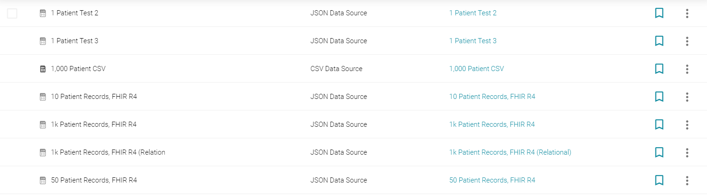Synthetic patient records in CSV and JSON files.
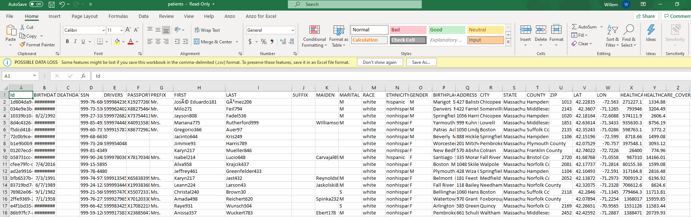Detailed view of patient records CSV file.
Patient Information Table
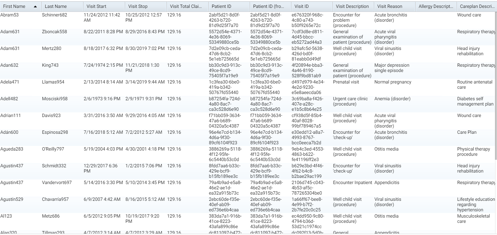More detailed model of patient records to FHIR model linking.
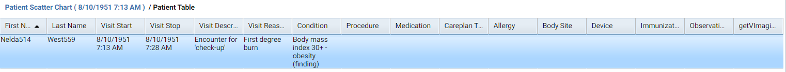More detailed model of patient records to FHIR model linking.
Patient Journey Timeline

SPARQL query to link CSV Patient class to FHIR patients class.
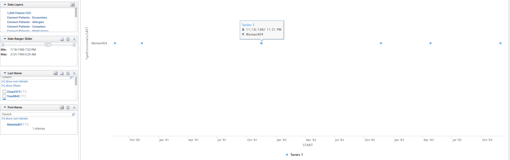SPARQL query to link CSV Patient class to FHIR patients class.
Linking Overview
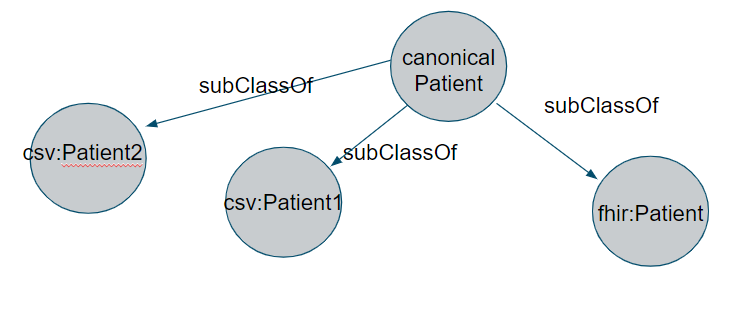 A simple canonical model intended to show how CSV files of synthetic patient records ("generated by SyntheaTM, an open-source patient population simulation made available by The MITRE Corporation") will interact and merge with the FHIR standardization. The patient records and FHIR standardization will both be children under a patient parent class. The parent class will allow data to be pulled from the patient records with the FHIR standardization acting similar to a filter.
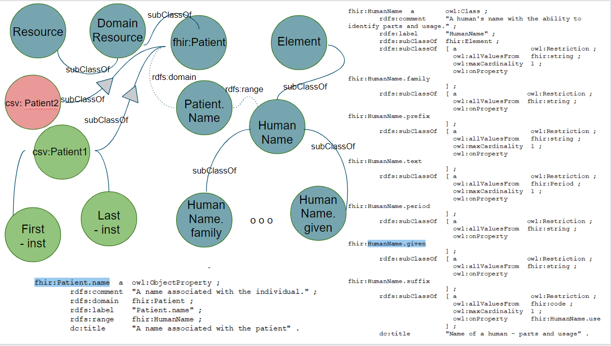More detailed model of patient records to FHIR model linking.
Linking
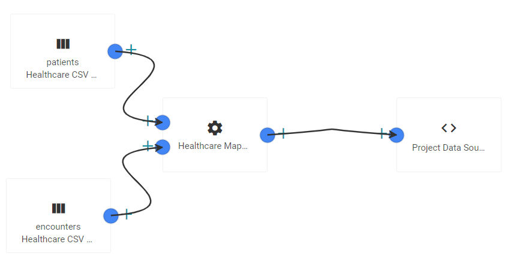Ingest the two significant classes from FHIR model via pipeline before mapping.
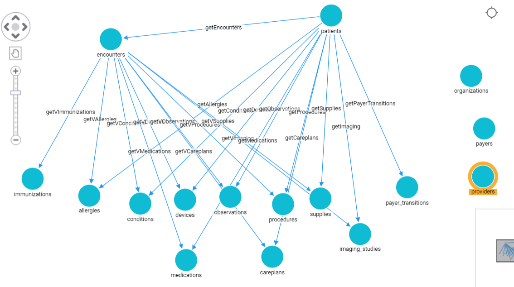Graph model view of patients class to encounters class (which represent doctor visits) link within FHIR model.
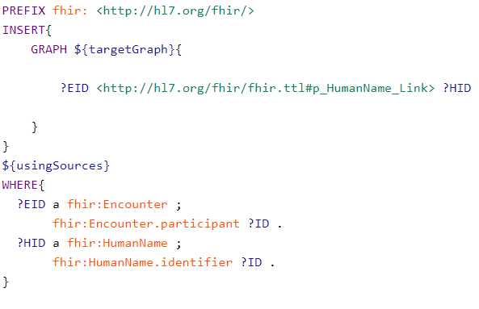SPARQL query behind FHIR model patients to encounters link.
Map CSV Patient class to FHIR patients class.
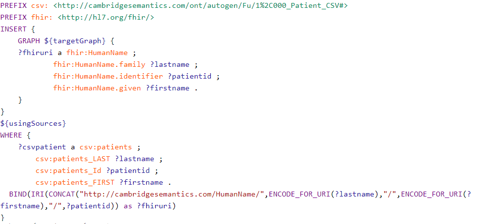SPARQL query to link CSV Patient class to FHIR patients class.